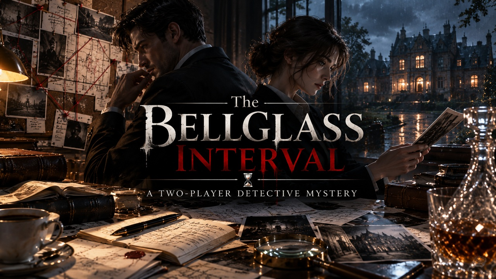

An early-access cooperative mystery · For two adults
THE BELLGLASS
INTERVAL
A rare tide chart disappears from a locked museum display. The blackout looks like perfect cover—until two investigators compare private records, mismatched clocks and competing alibis.

AI-assisted early-access edition. Technical file checks have been performed; independent two-adult playtesting and actual duration are not yet established. Gumroad handles checkout; applicable taxes may be additional. See the FAQ for limitations.
One case. Two incomplete truths.
On the night of a museum celebration, a precious archival tide chart goes missing. Everyone points to the blackout. But the display-case clock is not the museum clock, and the two investigators hold different pieces of the timeline.
You cannot solve this by simply reading your partner's pages. Each investigator holds a separate part of the evidence. Compare observations, build a joint timeline, weigh explanations and decide what you can actually prove.
Exactly what you receive
Investigator A dossier
Eight private exhibits. One side of the case, built around museum and physical records. Keep it private.
Investigator B dossier
Eight different private exhibits. Statements and sources your partner has not seen. Discuss, don't swap dossiers.
Finish the investigation
A joint worksheet, four optional hints, a separate answer key and an offline play guide. Digital files for screen or optional print.
This is the published v0.1.5 early-access package. A larger v0.1.6 is in private development and is not included in this purchase. Replay surprise is limited because the solution is fixed.
How it works
Get two investigators
Each adult chooses Investigator A or B, opens only that dossier, and keeps the underlying pages private.
Exchange findings
Describe documents aloud, compare clocks and testimony, and record a shared interpretation. Read optional hints only if both agree.
Deliver one verdict
Agree what happened and why. Open the separate answer only after you've committed to a theory.
Want to try the format before buying?
A complete free mini-case
The Raincheck Pin is a separate two-person mystery and is free to play. It is not a preview chapter of this museum case.
Play The Raincheck Pin for free →Prefer a developmental playtest?
Adult pairs may request a free private test of the expanded v0.1.6 version, which is not sold yet. Invitations are not guaranteed.
See the private tester open call →Questions before buying
Is it a physical product?
No. It's a digital PDF mystery. You receive files through the seller's digital-delivery process. No physical box is shipped.
Do I need to print?
No. You can read on separate screens, or print the included A4 or US Letter layouts. Two screens/devices make keeping the dossiers separate easier.
Is it suitable for one person or a group?
The intended format is exactly two English-reading adults, each holding a different investigator file. Other play styles have not been independently tested.
Does v0.1.5 include the historical harbour investigation?
No. The currently sold v0.1.5 is the complete museum chart-theft mystery with 16 exhibits, split between two investigators. The historical 2014 harbour investigation belongs to the expanded v0.1.6 private development build and is not included with this purchase.
How long does it take?
The play duration has not been validated by an independent two-adult blind test. Please don't buy it assuming a guaranteed number of hours.
Is the mystery tested and professionally reviewed?
Internal technical checks have been run. Independent blind testing, external reviews, story quality, fairness and enjoyment have not been confirmed. AI assisted writing, design and technical preparation.
What about the upcoming expanded v0.1.6?
It's a distinct private development/test build, not part of the published v0.1.5 purchase. This page does not promise a free upgrade or an unpublished feature.
Ready to open the file?
Your partner has evidence you don't.
One purchase gives you the two-investigator digital case. Read the seller description and choose whether the early-access edition is right for you.
View The Bellglass Interval · $12 →No subscription · Digital goods · Seller checkout on Gumroad